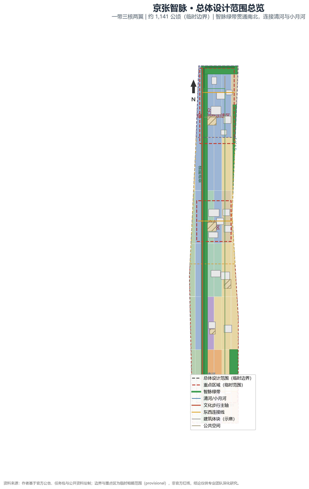
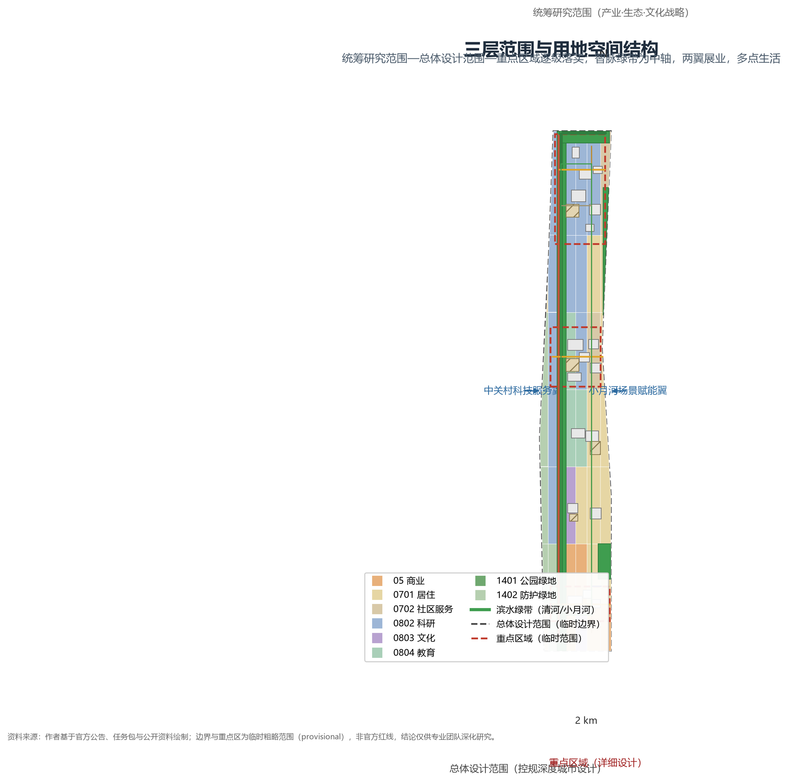
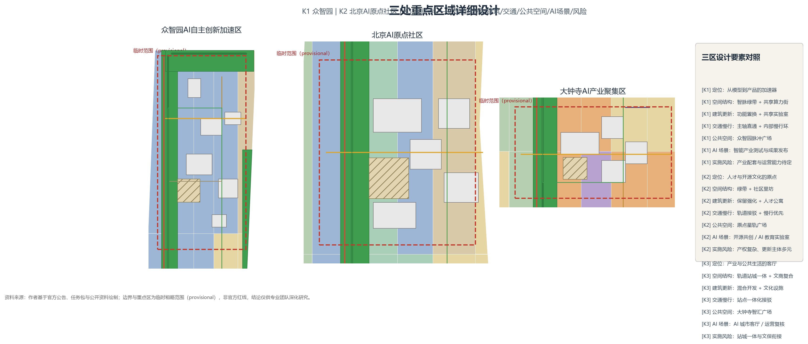
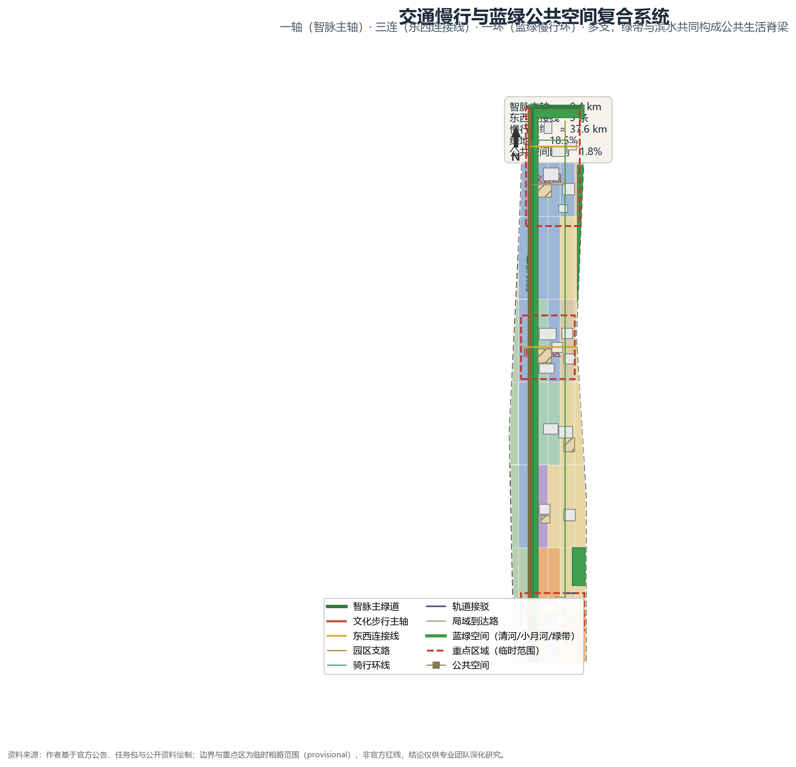

总览地图
总览地图把用地分区、智脉绿带、公共空间、建筑体块、慢行网络与三处重点区域置于同一证据图，展示"一带三核两翼"的空间主线。

三层范围
统筹研究范围（产业·生态·文化战略）→ 总体设计范围（控规深度城市设计）→ 重点区域（详细设计）逐级落实。

重点区域
K1 众智园AI自主创新加速区、K2 北京AI原点社区、K3 大钟寺AI产业聚集区，均形成定位+结构+建筑+交通+公共空间+AI场景+风险的可读小方案；大钟寺片区提出智能原生消费与商务场景方向（先试点、可逆引入）。整体遵循东西缝合与南北贯通概念策略。

用地分区
全场地 48 块用地无缝无重叠覆盖，采用《国土空间调查、规划、用途管制用地用海分类指南（2023）》代码；法定地类判定待控规确认。
智脉绿带与滨水绿带
两翼研发地块
人才与社区服务
西翼生活组团
大钟寺等节点
沿既有轨道与道路
交通慢行
一轴（智脉主轴）、三连（东西连接线）、一环（蓝绿慢行环）、多支。轨道接驳以大钟寺、清河方向既有站点一体化组织。

蓝绿公共空间
一脉两带一环：约 200 米宽智脉绿带，清河与小月河滨水绿带，串联三核的蓝绿慢行环；4 处 AI 朝圣地标与 5 处广场。
轨道时刻表意象 · 开源社区荣誉墙
AI 与城市历史对话
开发者成果发布"朝圣广场"
百年铁轨与中关村创新记忆
坐憩/发布台/荣誉展示/导视/照明/绿化 六类标准件 · 三区差异化组合
开源贡献者荣誉墙 · 年度成果里程碑墙 · 贡献展示
轨·站·桥·阀·码五母题 · 分级标识 · 双语无障碍
建筑
19 个体块示意覆盖 AI 研发、实验室、文化、孵化器、交通枢纽、人才公寓、教育、社区服务与混合功能，不与绿地、公共空间、河流重叠，为空间供给证据链，不代表已批建筑。
更新项目
八类概念更新项目：智脉绿带贯通、滨水蓝绿带修复、三核产业空间更新、存量园区功能置换、站点一体化、人才住房补缺、慢行接驳完善、AI 场景试点空间。对应三期分期（phasing.geojson）。
AI 场景
12 张 AI 场景卡，其中 SC-02、SC-05、SC-07 为 AI 产业测试验证场景，均以人工复核、隐私边界与可逆试点为前置；经场景-空间-运营映射归并为创新共创/测试验证/文化体验/服务导航/安全健康生态五组运行机制。
开发者共创空间 · 众智园脉冲广场
测试验证 · 低速自主移动体 · 小月河翼
产业链图谱 · 众智园研发地块
沿线车站遗址 · 可溯源策展
测试验证 · 慢行断点轻量试点
政策导航 · 原点社区里坊
测试验证 · 最后一公里 · 大钟寺
活动人流 · 人工复核清单
公共服务目录 · 不采集健康信息
清河滨水 · 环境数据聚合
交叉口 · 无障碍调研
站城一体 · 内容文化合规
核心指标
已知指标均由 geometry/*.geojson 在 EPSG:4548 下复算；容积率、建筑高度等法定控制无经批准条件，列为待确认。
任务覆盖
compliance_matrix.json 覆盖公告 17 项任务（1.3.1—1.5.3.3）与 6 项智能体任务，共 23 项；standard_matrix.json 覆盖 5 项强制标准并登记 1 项数据缺口；design_depth_matrix.json 覆盖 15 项必需深度项。
自检状态
本包自检项（self_check.json）全部通过；确定性校验、空间复核、可视化检查与专业证据检查为机器可读结果。
来源
sources.json 登记 11 项来源，均区分正式、导航、临时与背景用途。
假设
assumptions.json 登记 9 条假设，均标注状态与影响。
- A-BOUNDARY-001：边界为临时粗略 polygon，非官方红线
- A-CONTROLS-001：控规条件未公开，法定强度列为待确认
- A-LANDUSE-001：用地分区为方案概念，法定地类待确认
- A-BUILDING-001：建筑为体块示意，非已批建筑
- A-ROAD-001：道路为概念线位，非工程中心线
- A-GREEN-PUBLIC-001：绿地率与公共空间比例为设计目标
- A-SCENARIO-001：AI 场景卡为概念试点，需人工复核与可逆试点
- A-EVENT-001：活动与运营体系为概念建议，不构成承诺
- A-PRIVACY-001：场景数据仅用公开或经同意数据，最小化原则